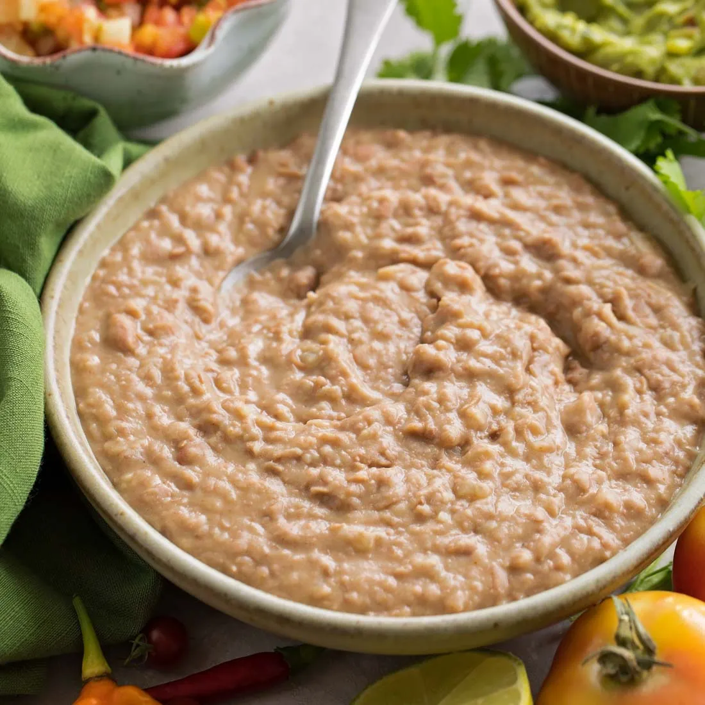

Mexican Beans

Description
This will be a paragrah talking about the beans
This will be a paragraph talking about where the recipe comes
from and changes I've made
Ingredients
- Full package of Pinto Beans
- 12 cups of Water
- 1 Garlic Head
- 3 tablespoons of Adobo
- 2 tablespoons of Taco Spice
- 1 1/2 tablespoons of Red Pepper Flakes
- 1 tablespoon of Garlic Salt
- 1 tablespoon of Onion Powder
- 1 teaspoon of Salt
- 1 teaspoon of Olive Oil
Steps
- Add all ingredients to a slow cooker
- Stir so spices are evenly distributed
- Turn slow cooker onto high and leave cooking for 6 hours
- When finished and beans are soft, remove the water from the slow cooker
leaving one cup full
- Blend the beans with a hand blender and serve